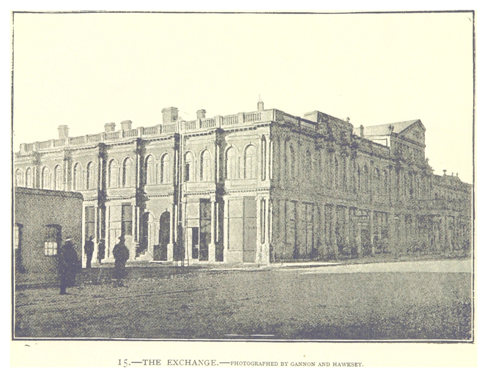
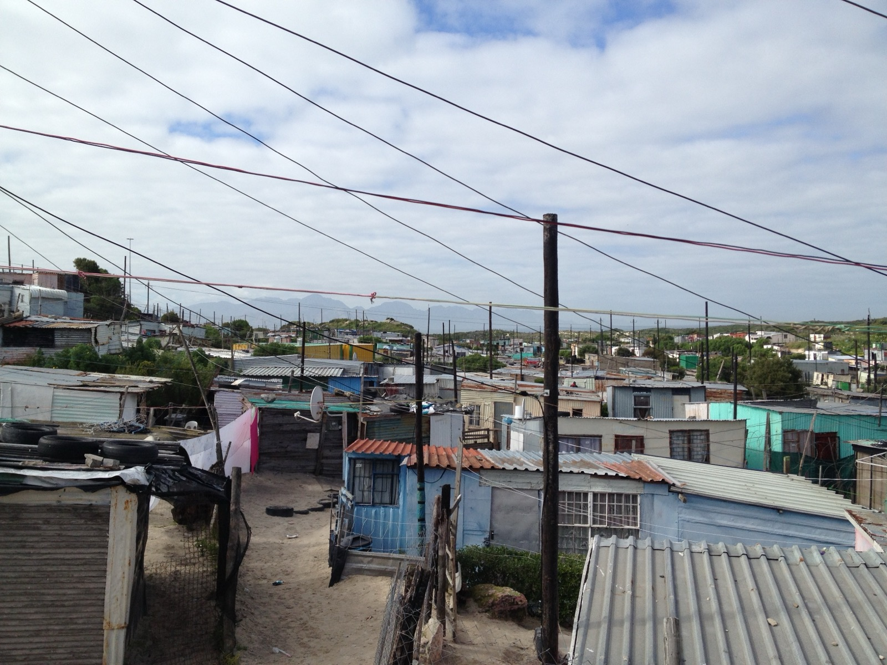

After apartheid, South Africa tied itself more tightly to world trade,
investment, and international rules. Average income rose and trade grew,
yet the richest roughly 10% of people received about 65% of
pre-tax national income in recent years, all while unemployment has
remained high.
Opening to trade boosted the national economy but failed to create broad opportunity, instead triggering localized job losses for marginalized workers.
WDI · World BankWID · inequality sharesWIID · UNU-WIDERWGI · governanceQLFS · Stats SA 2025Q1
The Evidence section runs many regression
tests on the same years of data, with standard errors adjusted for year-to-year
patterns and with stricter checks when many tests are run at once.
After 1994, did South Africa integrate into the global economy faster
than it created broad domestic opportunity, driving aggregate growth
that ultimately left the majority behind?
In 1994 South Africa took over an economy that had been partly cut off
for decades: sanctions and closed policy had left trade at only
37% of GDP and foreign money largely shut out of the
stock market. The 1893 print below is a reminder that South Africa was
already tied to global finance and commodity markets long before 1994:
the post-1994 opening built on old patterns of who held power and wealth,
not a clean start.
Two broad economic strategies shaped the transition.
The Reconstruction and Development Programme (RDP, 1994)
promised redistribution, housing, electrification and a more active state.
About twenty months later, policy shifted toward
Growth, Employment and Redistribution (GEAR, 1996):
tighter budgets, inflation targets, lower trade barriers, easier rules
for money to move across borders, and some privatization.

(Johannesburg) The Exchange—the first Johannesburg Stock Exchange building (founded 8 Nov 1887 by B.M. Woollan; at the time the oldest stock-exchange facility in the subcontinent). Print dated 1893; illustrators Gannon & Hawskey. Extracted from p. 24 of Henry Longland, The Golden Transvaal: an illustrated review, descriptive, historical, etc. (British Library HMNTS 10096.g.12.; held and digitised by the British Library, via Flickr). Wikimedia Commons · Public Domain Mark 1.0. British Library on Flickr.
Daily life in commuting, informal housing, port towns, or migration to Gauteng does
not show up as one line in GDP per person, but it explains why place and
politics matter. The photos in §2 put a face on the trade numbers in §4;
Gugulethu and Cato Crest show that “openness” lands very differently in
different neighbourhoods. The charts and statistics on this page trace
patterns in the national data; stronger claims about cause and effect rely
on outside research listed in Sources,
including studies of sanctions, local labour markets after tariff cuts,
and who holds income and wealth.
The fight over RDP versus GEAR was always
deeply political, not only technical.
How to read this page. You are looking at
35 years of national data. Numbers from
regressions show asso ciations, not proof that one thing caused
another. Where this essay makes a cause-and-effect argument, it points to
outside studies in the sources section.
These photos show where people live and work, how goods move
through ports, what “more trade” looks like on the water, and why
national averages can hide who is left out.
01 · Where people work
Townships before national averages
Opening up does not hit a single, fair job market. The city skyline
and a township like Gugulethu sit in the same story: people move for
work, but opportunity is not shared the same way everywhere.
That is why the national unemployment chart later matters. A key
paper is
Erten–Leight–Tregenna:
it compares districts more exposed to tariff cuts with districts
less exposed, and finds weaker jobs and formal work where exposure
was higher, especially for Black workers and women.

Gugulethu Township, Western Cape: the labour-market geography behind a national unemployment rate. Source: Wikimedia Commons.Durban harbour: the coast behind the “trade as a share of the economy” lines in §4. Source: Wikimedia Commons.
02 · Moving goods
From water to the national trade line
Ports turn policy into motion: import taxes, international
commitments (like the WTO), containers, rails, trucks and customs
all feed into one national measure for “how open is trade?”.
03 · Throughput
Boxes are not paychecks
Stacked containers show trade moving. They do not say who captured
the benefit in terms of wages, jobs, profits, or asset prices. That jump from
“more flow” to “who gains” is what §4 and §5 are about.
Container terminal at the Port of Durban: throughput behind rising trade intensity. Source: Wikimedia Commons.MV Ever Refine at Durban: integration at ship scale. Source: Panoramio via Wayback Machine.
Cato Crest, Durban: the settlement edge beside the port economy. Source: Wikimedia Commons.
04 · Who is left at the edge?
Back to the main question
Trade can rise while jobs, housing and access to opportunity stay
deeply uneven. The next sections use national data to trace that
tension, then point to research that speaks more directly to cause
and effect.
Tracing the path: sanctions end, RDP becomes GEAR, global trade locks in, commodities surge, and governance stalls. The cards below map these turning points.
World Economic Forum Annual Meeting, Davos (27 Jan 2005). Compare the scene to the foreign-investment line in §4: being seen as a “normal” economy mattered, even when money from abroad stayed modest in the data.
Trade openness here means (exports + imports) ÷ GDP. GDP more than
doubled between 1990 and 2022. Foreign direct investment (money from abroad
used to build or buy businesses) stayed small but moved with the same
broader story. The charts show a tension: trade and average income rose,
yet the economy still did not generate enough jobs for everyone.
Port of Durban container stacks (2010 file date on Commons)—the throughput behind rising Trade/GDP.
From docks to national lines
You can see openness in trade flows before you feel it in paychecks:
trade as a share of the economy explodes while income per person lags behind, all while unemployment remains painfully high.
How to read Income per person, trade/GDP and FDI/GDP are set so 1990 = 100; the vertical axis uses a log scale so large swings in trade do not hide slower moves in income.
Caution In these national data, higher trade lines up with higher income per person, higher unemployment, and a higher top-income share, but that does not prove trade caused any of them.
Technical note A formal “long-run link” test between log income per person and trade/GDP does not find a stable long-run pairing here (p ≈ 0.48 for Engle–Granger).
Source World Development Indicators; trade-policy context in Sources.
Indexed national indicators, 1990 = 100 (log scale)
Income per person, trade/GDP and FDI/GDP, all set to 100 in 1990. The log scale keeps the clearer picture: trade moved a lot; income per person moved less.
Unemployment (ILO-style measure)
High, persistent unemployment is the reason higher average income does not translate into jobs for everyone.
Who gets what unfolds in steps: income shares, wealth, survey inequality
(Gini), and then place. This section starts with the whole country, then
zooms to geography.
Who holds income and wealth
The pattern is not subtle: by 2020 the best-off tenth of people held
about 65% of pre-tax national income, while the bottom half received
under 6%.
Income The top 10%’s share of income rose from roughly 47% in 1990 to about 65% by 2020.
Wealth Wealth is more concentrated than yearly income: the top 10% held roughly 85% of household wealth.
Place The map image below shows inequality in space—read it next to Gugulethu and Cato Crest in §2.
The charts above show national shares; the still image below captures
inequality as a map—one snapshot of the same geography.
Inequality in national space
Land patterns in Cape Town (6 Nov 2017), from Exploring Africa (2017) and Sayer (2016), used here alongside the Gini chart as a picture of inequality across space. Wikimedia Commons. Resized locally; see CREDITS.md.
More inequality checks
These two views add context: one tracks overall inequality across surveys, and one compares trade openness with top-income share year by year.
Gini (WIID vs WDI)
The Gini index summarizes inequality in one number (higher = more unequal). Survey-based series sit near 0.63 but can shift with how surveys are built. See WIID 2025.
Top-10% income share vs Trade/GDP
Each dot is a year (hover for the year). The best-fit line slopes up and is statistically tight in this sample—but that still does not prove trade caused higher top shares.
The core tension shows up in inequality data:
after 1994, openness did not coincide with a clearly fairer split of income.
From 1994 on, the top tenth’s income share rose by
roughly 18 percentage points. The bottom half’s share
fell by about a third. Wealth is even sharper: the top 10% hold roughly
85% of household wealth.
For a clearer cause-and-effect picture than national correlation charts,
see
Erten–Leight–Tregenna (2019):
districts more exposed to tariff cuts from 1994–2005 tended to see weaker
jobs, formal work, and wages, with the worst outcomes for Black workers
and women. That district-level evidence—not the scatter plot above—is what
best supports the “price of integration” idea when you move from pattern
to mechanism.
This section asks how far courts, accountability, and trust in rules
moved alongside the economy. The World Bank’s governance scores are rough
annual summaries, but they help test whether outside observers still saw
those commitments as credible over time.
Constitution Hill in brick and glass
The Constitutional Court in the photo stands for the post-1994 legal
order—public-interest cases, socioeconomic rights, and a break with
unchecked parliamentary power under apartheid. The “rule of law” and
“voice and accountability” scores in the chart below are only rough
yearly ratings; they cannot describe every court case, but they track
whether outside observers still saw those promises as credible when
patronage politics hardened in the 2010s.
Photo: Alex Southgate (image dated 26 Aug 2009; uploaded 1 Nov 2009). Licence not stated in supplied metadata—confirm on the original host before reuse. See CREDITS.md.
WGI (World Governance Indicators), South Africa (1996–2024)
Average governance, rule of law, and control of corruption carry the main story; lighter lines show the other pillars for context. See how WGI is built.
The overall WGI score peaks around 2008 and weakens during the Zuma
years (2009–2018), with a partial bounce later. That timing lines up with
the “rules and trust” story, but it does not prove governance caused growth.
In the statistical battery, a higher WGI score lines up with faster GDP
growth in one specification (slope ≈ 40.5,
p = 0.036 with adjusted errors, 26 years)—yet
that remains an association in a short, shock-filled sample, not proof that
better governance caused faster growth.
Summary first; full regression tables below if you want every estimate and diagnostic.
Regression in plain English. Each test asks how variables moved together across years.
That helps spot patterns; it does not by itself prove cause and effect—especially with only a few
decades of annual data.
Takeaways
Trade and top incomes move together. In this project’s many tests, the link between trade openness and the richest 1%’s income share is the one pattern that still clears the strictest “many-tests” checks. That is not proof that trade caused higher top incomes—but it matches what you see on the charts and fits alongside Erten–Leight–Tregenna’s district-level evidence.
No simple “GEAR changed growth overnight” break. Formal break tests around 1996 do not show a sharp statistical regime shift at usual cutoffs; the story of GEAR is still clearer in policy history than in one clean break line.
Unemployment stays the limiting factor. National charts and the provincial map both show opening up did not automatically produce enough jobs.
Use the tables as reference, not scripture. They are exploratory; the BH / Bonf / Raw labels tell you how skeptical to be after accounting for running lots of tests.
Tests run–
Passed basic 5% cutoff–
Still passes Bonferroni–
Still passes BH (strictest here)–
Tier
BHBH · strict many-test adjustmentBonfBonferroni · very conservative adjustmentRawraw · basic cutoff onlyn/snot sig. at 5%
p
p < 0.05 · p ≥ 0.05
Diag
DW near 2 is healthy · BP, LB > 0.05 suggests fewer technical red flags · click a row for estimates
Glossary
Main regression table
Click a row to expand estimates and technical checks. Quick guide:
DW near 2 is healthy;
BP and LB above 0.05 usually mean fewer warning lights.
Hover a province for its narrow unemployment rate—people actively
looking for work who cannot find it. The broader measure that counts
discouraged job-seekers too was 43.1% nationally in Q1 2025.
Source: Stats SA QLFS.
One national unemployment number hides large differences between places.
Apartheid left a geography where jobs, housing, and former homeland regions
still line up with worse outcomes today. Gauteng may offer more formal work
on average, yet pockets of deep joblessness remain everywhere.
This color-coded map is crude—each province holds rich and poor communities—but
it still shows the main point: joblessness is concentrated, not evenly spread,
and high trade on paper does not erase those gaps.
Pair KwaZulu-Natal with the Durban harbour photos in §2 and the Western Cape
with Gugulethu: same country, different realities at province scale.
What hundreds of statistical tests, governance scores, and outside studies
agree on—and what they still cannot settle from national numbers alone.
1 · What opening up achieved
Trade rose, sanctions faded, outside ratings of institutions improved for a
time, and income per person ended higher than in 1994. Those gains show up
clearly in the national charts—they describe “what happened,” not automatic
proof of why.
2 · Where gains did not reach most people
Jobs did not scale up for everyone; income and wealth stayed concentrated at
the top. Narrow unemployment (actively searching, no job) was still
32.9% in Q1 2025.
3 · Strongest cause-and-effect evidence cited here
The national regressions show correlations only. The sharper story comes from
Erten–Leight–Tregenna:
districts more exposed to tariff cuts saw weaker employment, formal jobs,
and wages, with the worst hits on Black workers and women.
4 · What remains unclear from this page alone
Even the durable trade/top-income pattern in the battery is not airtight proof
of causation. Governance lines up with growth only weakly in a short sample
(26 years), and formal break tests around GEAR do not show a neat statistical
growth hinge.
Answering carefully: yes—South Africa grew more connected and somewhat richer on
average, yet everyday security in jobs and fair shares lagged. National charts
paint the pattern; district-level labour-market research points to the pathway
worth taking seriously next—pairing industrial policy with fixing spatial unfairness
and activating labour markets where people actually live.
Fair to say: After 1994, South Africa opened more while income and wealth stayed highly concentrated and unemployment stayed high.
Fair to say: Among this project’s many regressions, the trade/top-income pattern is the hardest to dismiss after strict corrections.
Not fair to claim: That these national charts alone prove trade caused inequality, or GEAR caused growth paths, or governance caused GDP.
Not fair to claim: Perfect comparability across inequality surveys that were built in different ways or stop in different years.
Limits of the evidence (most important first)
Few years per series. At most about 35 annual points.
Statistical precision is limited even when p-values look tiny.
Year follows year. Many rows fail the Durbin–Watson check
(below 1.5), meaning errors cluster over time. Adjusted standard errors help,
but filtering those rows is wise when you want cleaner reads.
Many tests, many chances. This page estimates
hundreds
of equations. Bonferroni and BH adjustments punish that; surviving BH is the
credibility bar used here.
Correlation is not policy proof. For stronger causal claims,
this essay leans on outside work—sanctions synthetic controls, district labour
markets after tariff cuts, and wealth distribution accounting (WIL 2021).
Survey gaps. WIID-based Gini fades after 2017; WDI Gini is thin.
Treat cross-series comparisons as suggestive, not exact.


{kind=link}
_The_Exchange.jpg){kind=link}
_(5457977786).jpg){kind=link}